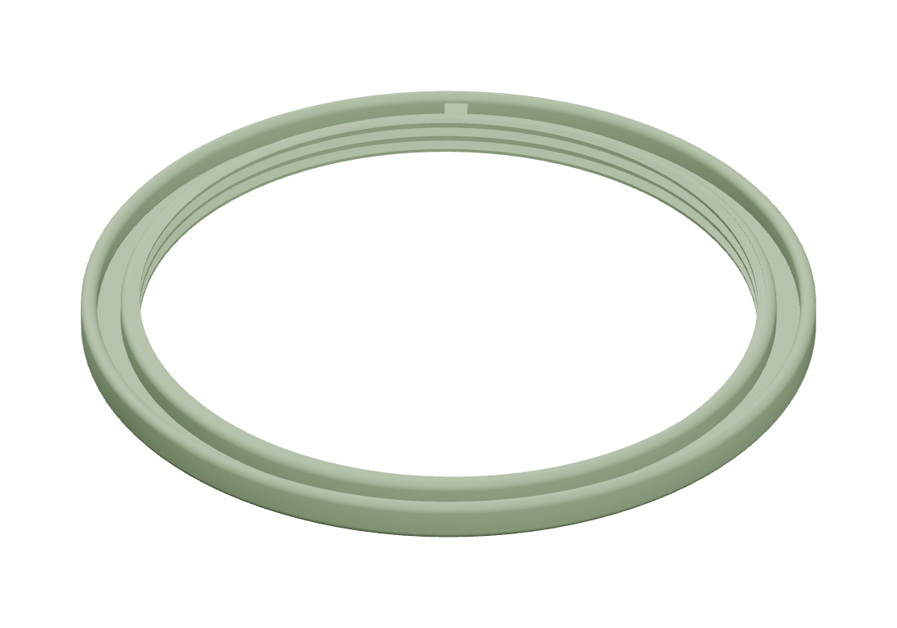

Cardboard can
Print plates
Individual components

About this print
The ring that locates the cardboard core in the storage can. Line up its small nub with the notch in the cardboard when assembling the container.

The ring that locates the cardboard core in the storage can. Line up its small nub with the notch in the cardboard when assembling the container.